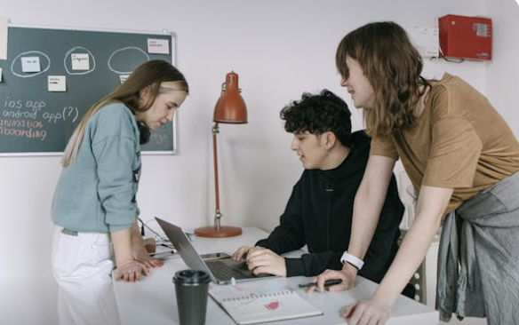

L1004-01: Ofimática y programación
Esta lectura muestra los conceptos introductorios a la Ofimática y programación.
Software
El software es el conjunto de programas, bases de datos y diferentes tipos de archivos que controlan el hardware a través de instrucciones. El software debe tener requisitos y funcionalidades. Es la parte intangible de un sistema informático, en contraste con el hardware, que es la parte física. El software se puede clasificar en dos tipos:
Software de sistema: Ejecuta la funcionalidades básicas de un hardware (encender la máquina, mostrar imagen, monitoreo de temperatura, etc.).
Software de aplicación: Trabaja en función del software del sistema para que el usuario pueda realizar una tarea específica (procesar texto, edición de imágenes, navegar en Internet, programar, etc.)
Programación
La programación se refiere específicamente a la escritura de código para crear funcionalidades dentro del software. Es una parte esencial del desarrollo, pero no abarca todo el proceso.
En la programación, las actividades a desarrollar están orientadas a la creación de código fuente. Es decir, una serie de instrucciones que se le da al PC para realizar alguna acción. También se realiza depuración y optimización de código lo cual permite que solucionen muchos errores. Es muy importante que el programador entienda la responsabilidad de salvaguardar el código fuente construido, por tanto debe sacar tiempo para tareas de copias de seguridad y control de versiones.

Código fuente |
Desarrollo de software
El desarrollo de software es un proceso que abarca la programación, pero también incluye planificación, diseño, pruebas y mantenimiento. Es un enfoque más holístico que busca crear software funcional y útil.
En el desarrollo de software se realizan tareas como el análisis de requisitos que busca identificar que funciones debe tener dicho software. También se hacen tareas de diseño donde se trabaja con bocetos iniciales para tener una idea general de como estará compuesto y de que forma funcionará el software. Otra tarea muy común es la programación la cual consiste en crear código fuente para la construcción del programa. Finalmente se realizan pruebas, implementación, mantenimiento y documentación.
 Equipo de desarrollo de software |
{kind=link}
Programadores Vs Desarrolladores
El desarrollo de software lo llevan a cabo principalmente programadores y desarrolladores de software. Estos roles interactúan y se superponen, y la dinámica entre ellos varía mucho entre los departamentos de desarrollo y las comunidades.
Programadores: Escriben código fuente para programar ordenadores que realicen tareas específicas, como fusionar bases de datos, procesar pedidos en línea, enrutar comunicaciones, realizar búsquedas o mostrar textos y gráficos. Los programadores suelen interpretar las instrucciones de los desarrolladores e ingenieros de software y utilizan lenguajes de programación como C++ o Java para llevarlas a cabo.
Desarrollador de software: Estan estrechamente involucrados en áreas específicas del proyecto, incluida la escritura de código. Al mismo tiempo, dirigen todo el ciclo de vida del desarrollo de software, lo que implica colaborar con los equipos funcionales para transformar los requisitos en características, gestionar los equipos y procesos de desarrollo, y realizar pruebas y mantenimiento del software.
¿Cuál es la diferencia entre un programador y un desarrollador?
Construir un software es como construir una misma casa varias veces. El lograr que cada persona aporte significativamente en su campo de acción ya sea como desarrollador o como programador, hará que la casa se construya de forma óptima.
Un desarrollador diseña, construye y mantiene software mediante un proceso compuesto por etapas o fases(análisis de requisitos, diseño, construcción, pruebas, implementación y mantenimiento).
Un programador codifica programas que hacen parte del software.
Tipos de desarrollo de software
El software es el conjunto de instrucciones o programas que indican a un ordenador lo que debe hacer. Es independiente del hardware y hace que los ordenadores sean programables. Hay tres tipos básicos:
Software de sistema: Proporciona funciones básicas, como sistemas operativos, gestión de discos, servicios, gestión de hardware y otras necesidades operativas.
Software de programación: Proporciona herramientas a los programadores, como editores de texto, compiladores, enlazadores, depuradores y otras herramientas para crear código.
Software de aplicación: Ayuda a los usuarios a realizar tareas. Por ejemplo, conjuntos de productividad ofimática, software de gestión de datos, reproductores multimedia y programas de seguridad. Las aplicaciones también se refieren a aplicaciones web y móviles como las que se utilizan para comprar en Amazon.com, socializar con Facebook o publicar fotos en Instagram.
Software embebido: Se utiliza para controlar máquinas y dispositivos que normalmente no se consideran ordenadores: redes de telecomunicaciones, automóviles, robots industriales, etc. Estos dispositivos, y su software pueden conectarse como parte del Internet de las cosas (IoT).
Proceso de desarrollo de software
Los pasos del proceso de desarrollo de software se pueden agrupar en las fases del ciclo de vida, pero la importancia del ciclo de vida es que se recicla para permitir una mejora continua. Por ejemplo, los problemas de los usuarios que surgen en la fase de mantenimiento y soporte pueden convertirse en requisitos al inicio del siguiente ciclo.
FASE 01 (Análisis y especificación de requisitos)
En esta fase se comprende y documenta lo que necesitan los usuarios y otras partes interesadas. Se analiza la estructura tecnológica donde funcionará el software.
FASE 02 (Diseño y desarrollo)
Se diseña en torno a soluciones a los problemas presentados por los requisitos, lo que a menudo implica modelos de procesos y guiones gráficos. Se crean los modelos con una herramienta de modelado que utilice un lenguaje de modelado como UML para llevar a cabo la validación temprana, la creación de prototipos y la simulación del diseño. En el desarrollo se usa un lenguaje de programación adecuado al aplicativo que se quiere construir. Implica la revisión por pares y en equipo para eliminar problemas de forma temprana y producir software de calidad más rápido.
FASE 03 (Pruebas)
Se realizan dos tipos de pruebas:
Pruebas con escenarios planificados de antemano como parte del diseño y la codificación del software. Por ejemplo identificación de errores de código, de lógica de negocio o de seguridad.
Pruebas de rendimiento para simular niveles de carga de uso en la aplicación. Por ejemplo Identificar en que momento el aplicativo puede presentar fallos cuando varios usuarios lo usen al mismo tiempo.
FASE 04 (Implementación)
El software se instala o pone en producción para capacitar a los usuarios y lograr que se familiaricen con las funciones que este contenga. Se resuelven dudas de los usuarios. Si hay una versión anterior del software, la información alojada en el software anterior debe ser migrada el software nuevo desde aplicaciones o fuentes de datos existentes, si es necesario.
FASE 05 (Mantenimiento y soporte)
Para mantener la calidad y la entrega a lo largo del ciclo de vida de la aplicación, se deben tener fechas de seguimiento y soporte. Los usuarios nuevos deben ser capacitados. El software en lo posible debe ser escalable es decir, en la medida que requiera nuevas funcionalidades, estas se deben ir implementando para que el software no quede desactualizado en la medida que pase el tiempo.
Tecnologías usadas en el desarrollo de software
Hoy en día son bastantes las tecnologías que como herramientas que nos ayudan a construir software. Estas se pueden clasificar de la siguiente forma:
Sistemas operativos
Un sistema operativo (OS) es un software esencial que actúa como intermediario entre el usuario y el hardware de la computadora. Su función principal es gestionar los recursos del sistema y proporcionar una interfaz para que los usuarios y las aplicaciones interactúen con el hardware. Por ejemplo:
LINUX: Sistema operativo libre.
Windows: Sistema operativo privativo.
MACOS: Sistema operativo privativo para equipos de computo de APPLE.
Bases de datos
Una base de datos (DB) es un sistema organizado que permite almacenar, gestionar y recuperar información de manera eficiente. Una base de datos es como un archivo digital muy bien estructurado donde se guarda información que se puede buscar y manipular fácilmente. Por ejemplo:
MongoDB: Almacena los datos en documentos.
MySQL: Utiliza tablas para almacenar datos. La empresa propietaria es ORACLE.
SQL_Server: Utiliza tablas para almacenar datos. La empresa propietaria es MICROSOFT.
Servidor web
Un servidor web permite alojar páginas web y ejecutar aplicaciones web. Ejemplo:
APACHE: Es un servidor web tradicional que se basa en un modelo de procesamiento de solicitudes por separado. Cada solicitud genera un hilo diferente.
Entornos de ejecución
Un entorno de ejecución es un software que contiene todo lo necesario para que otro software se ejecute correctamente. Esto incluye desde un intermediario con el sistema operativo hasta librerías y demás recursos necesarios como la documentación. Por ejemplo:
NODE: También conocido como NODEJS, es un entorno de ejecución que permite ejecutar código JavaScript en el lado del servidor. A diferencia de JavaScript tradicional, que se ejecuta en el navegador, Node.js permite que los desarrolladores utilicen JavaScript para crear aplicaciones del lado del servidor, lo que lo hace muy versátil y poderoso.
Framework
Un framework es un conjunto de librerías, documentación que ayudan a desarrollar o ejecutar un software en específico. Por ejemplo:
.NET: Creado por Microsoft, permite crear aplicaciones de software más fácil y eficiente.
EXPRESS: Es un framework de aplicación web para Node.js que facilita la creación de aplicaciones que se ejecutan en el servidor web.
ANGULAR: Es un framework de aplicación web para Node.js que facilita la creación de aplicaciones que se ejecutan en el navegador web.
IDE
Un IDE son las siglas para (entorno de desarrollo de software). Es una aplicación que proporciona un conjunto completo de herramientas para facilitar el desarrollo de software. Un IDE combina diferentes herramientas y funciones en un solo lugar para ayudar a los programadores a escribir, depurar y mantener su código de manera más eficiente. Por ejemplo:
VISUAL STUDIO CODE: IDE de Microsoft para programar con cualquier lenguaje de programación.
THONNY: IDE para programar con el lenguaje de programación PYTHON.
Desarollo web
Se conoce como desarrollo web al proceso de crear y mantener un sitio web que sea funcional en internet, a través de diferentes lenguajes de programación, según el modelo y la parte de la página que corresponda. Cada sitio tiene una URL única que lo distingue de los demás en la red informática mundial.
Un sitio web puede clasificarse de diferentes formas. Para cuestiones de desarrollo web principalmente se divide en dos partes:
Front-end: Es la parte que interactúa con el usuario, tanto en imagen como en función. Por ello está íntimamente relacionada con la experiencia del usuario (UX) y la interfaz de usuario (IU).
Back-end: Se refiere a la parte que está en contacto directo con el servidor; es donde se aplica el código de programación para crear la estructura. Permanece en un segundo plano a cargo de la accesibilidad, actualización, bases de datos y cambios del sitio.
Los desarrolladores web se enfocan en la codificación y programación del sitio web utilizando lenguajes como HTML, CSS, JavaScript y otros. Su objetivo es que el sitio responda correctamente a las interacciones que realice el usuario en él y concretar un stack tecnológico adecuado. Algunos ejemplos de STACK son:
LAMP: Linux, Apache, MySQL, PHP/Python/Perl
MEAN: MongoDB, Express.js, Angular, Node.js
.NET stack: .NET, C#, SQL Server y Visual Studio
DJANGO: Python
Lenguajes de programación
Un lenguaje de programación es un conjunto de instrucciones que le damos a una computadora para que realice tareas específicas. Es como un idioma que usamos para comunicarnos con las máquinas. Estas instrucciones se escriben siguiendo reglas gramaticales y de sintaxis definidas, y el objetivo es crear programas que resuelvan problemas o hagan cosas útiles.
A continuación se muestran los 6 lenguajes de programación más usados en el desarrollo web. HTML, CSS y JavaScript suelen pertenecer al Front-end mientras que PHP, JAVA y Python suelen pertenecer al Back-end.
HTML: Es uno de los lenguajes de marcado más importantes que se usa en el Front-end de un sitio. Su escritura ayuda a dar estructura y organización al contenido de una página web, a través de una acomodación tipo árbol. Se configura por medio de etiquetas o hipertextos que permiten que los sitios web se encuentren en los motores de búsqueda.
CSS: El nombre extendido de CSS es Cascading Style Sheets, en español significa hojas de estilo en cascada. Este es un lenguaje que trabaja en perfecta armonía con el HTML en el Front-end. Para los programadores web es una herramienta muy útil para especificar el aspecto y la posición de los elementos en el sitio.
Javascript: Uno de los lenguajes más apreciados es JavaScript, ya que con él es muy fácil crear sitios interactivos y dinámicos (como animaciones, formularios, juegos, galerías, botones, etc.), los cuales son muy demandados hoy en día. Su código también se refleja en el Front-end. Se basa en objetos que se pueden acomodar y reutilizar de forma sencilla.
PHP: En el lado del Back-end se tiene el lenguaje PHP, uno de los pioneros de la transición de sitios fijos a sitios interactivos. Es uno de los lenguajes más utilizados por ser de código abierto, con casi 30 años de trayectoria; también es considerado uno de los más extensos que hay. Puede ser incrustado en el HTML sin ningún problema.
Java: Una de las grandes ventajas es que se escribe una sola vez y se puede ejecutar en distintos dispositivos y sistemas operativos, gracias a su máquina virtual (JVM). Corresponde al Back-end de una aplicación web. Tiene un código eficiente, memoria automática y detección de errores oportuna.
Python: Es uno de los lenguajes de desarrollo web más innovadores que hay hasta el momento, debido a su característica multiparadigma, que es capaz de adaptarse a varios estilos de programación y crear aplicaciones de cualquier tipo. Es de código abierto y su escritura es muy parecida al lenguaje humano. Forma parte del Back-end de un sitio.
Software de aplicación
Dentro del software de aplicación se encuentran varios ejemplos relacionados con áreas específicas como diseño, ofimática, gráfico, financiero, musical, etc.
Inkscape: Es un editor de gráficos vectoriales de código abierto, gratuito y disponible para múltiples sistemas operativos. Permite crear y editar imágenes vectoriales de alta calidad, ideal para ilustraciones, logotipos, diagramas y más.
Gimp: Es un editor de imágenes de código abierto, gratuito y multiplataforma. Ofrece una amplia gama de herramientas para manipular, retocar y crear imágenes rasterizadas, similar a Photoshop pero sin costo.
Blender: Es un software de modelado 3D, animación y renderizado gratuito y de código abierto. Es una herramienta potente y versátil utilizada para crear gráficos 3D, animaciones, juegos y más.
Audiofloss: Es una recopilación de software portable para Windows orientado a edición, producción y composición musical.
Godot: Es un motor de juego de código abierto, gratuito y multiplataforma. Proporciona un entorno completo para desarrollar videojuegos 2D y 3D, con un editor visual intuitivo y una gran comunidad de apoyo.